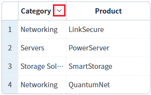
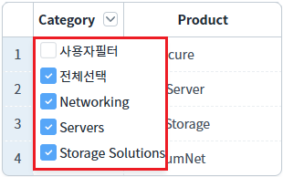
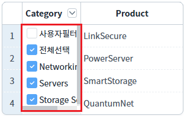
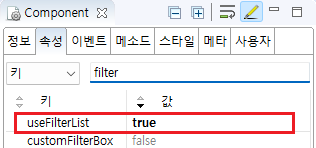
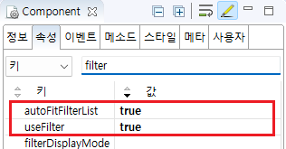

[GridView] 데이터 필터 목록의 최소 너비를 데이터의 최대 길이로 설정하기
1개요
GridView의 헤더 컬럼의 autoFitFilterList 속성의 기능 예제입니다. autoFitFilterList 속성은 헤더 컬럼의 데이터 필터를 리스트 형태로 지정하였을 때 동작하는 기능입니다.
아래는 설정 값과 설명입니다.
false : (기본 설저) 목록 박스의 너비는 컬럼의 너비로 지정됩니다.
true : 필터 목록 박스의 최소 너비가가 데이터의 최대 길이로 지정됩니다. (목록 박스의 너비가 데이터의 최대 길이보자 작은 경우 적용)
2구현된 기능
헤더 컬럼에 autoFitFilterList 속성 사용
(기본 설정) 헤더 컬럼에 autoFitFilterList 속성 미사용
3예제 테스트 방법
3.1헤더 컬럼에 autoFitFilterList 속성 사용
예제 영역 '헤더 컬럼에 autoFitFilterList 속성 사용'에 구성된 GridView에서 테스트합니다.1
STEP 1: 초기 상태 확인하기
헤더의 'Category' 컬럼에 '필터 목록 보기' 버튼이 구성되어있습니다.
Image 1.브라우저(Chrome) 실행 예시

2
STEP 2: 필터 목록을 표시합니다.
헤더의 'Category' 컬럼에 '필터 목록 보기' 버튼을 클릭합니다.
3
STEP 3: 실행된 결과를 확인합니다.
필터 목록 박스의 최소 너비가가 데이터의 최대 길이로 지정됩니다.
Image 2.브라우저(Chrome) 실행 예시

3.2(기본 설정) 헤더 컬럼에 autoFitFilterList 속성 미사용
예제 영역 '(기본 설정) 헤더 컬럼에 autoFitFilterList 속성 미사용'에 구성된 GridView에서 테스트합니다.1
STEP 1: 초기 상태 확인하기
헤더의 'Category' 컬럼에 '필터 목록 보기' 버튼이 구성되어있습니다.
Image 3.브라우저(Chrome) 실행 예시

2
STEP 2: 필터 목록을 표시합니다.
헤더의 'Category' 컬럼에 '필터 목록 보기' 버튼을 클릭합니다.
3
STEP 3: 실행된 결과를 확인합니다.
목록 박스의 너비가 컬럼의 너비로 표시됩니다.
Image 4.브라우저(Chrome) 실행 예시

4구현 예시
4.1헤더 컬럼에 autoFitFilterList 속성 사용
1
STEP 1: GridView의 속성을 정의합니다.
[필수] useFilterList="true"
[default: false, true] 필터 대상 값을 목록으로 표시.
Image 5.웹스퀘어 스튜디오의 Component View - 속성 설정 예시

2
STEP 2: GridView의 헤더 컬럼의 속성을 정의합니다.
[필수] useFilter="true"
필터 기능 사용
[필수] autoFitFilterList="true"
필터 목록 박스의 너비를 데이터의 최대 길이로 자동 조절 기능 사용
Image 6.웹스퀘어 스튜디오의 Component View - 헤더 컬럼 속성 설정 예시

Example 1.Source
<!-- gridView 의 소스 본문 예시 --> <w2:gridView useFilterList="true" dataList="data:dlt_exam_1" style="height:100px;"> <!-- 중략 --> <w2:header id="header1"> <w2:row id="row1"> <w2:column useFilter="true" autoFitFilterList="true" value="Category" width="68" id="column2" inputType="text"> </w2:column> <!-- 중략 --> </w2:row> </w2:header> <!-- 중략 --> </w2:gridView>
5주요 API
useFilterList
[header column] useFilter
[header column] autoFitFilterList